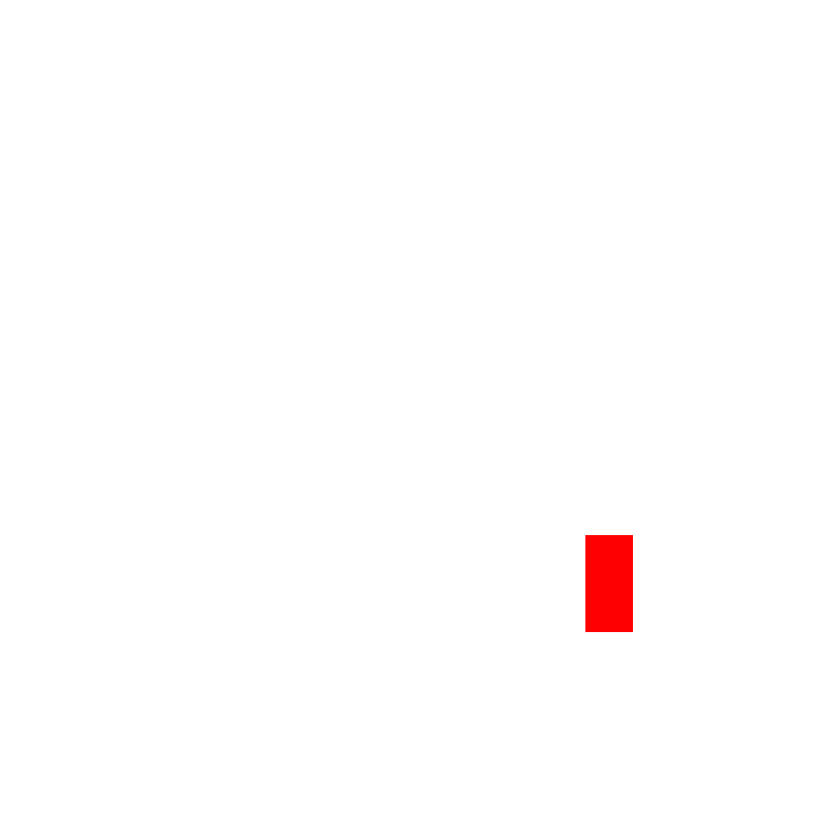
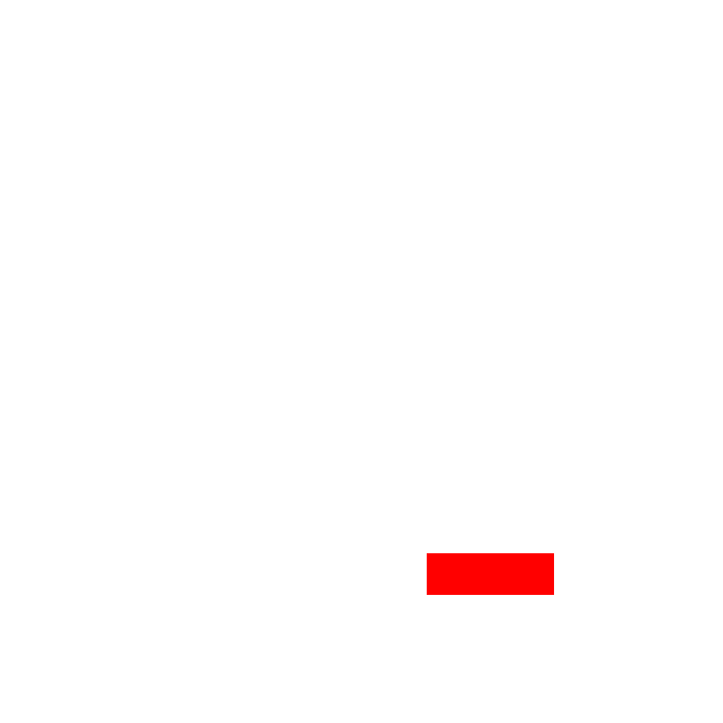
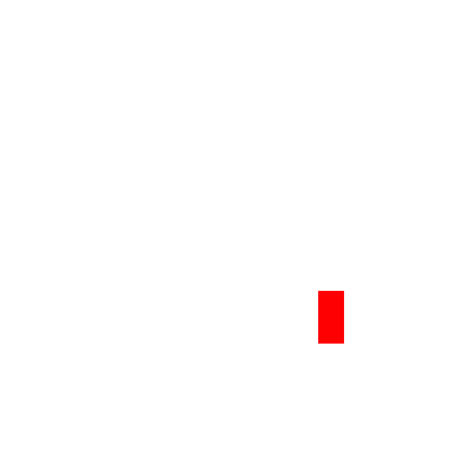
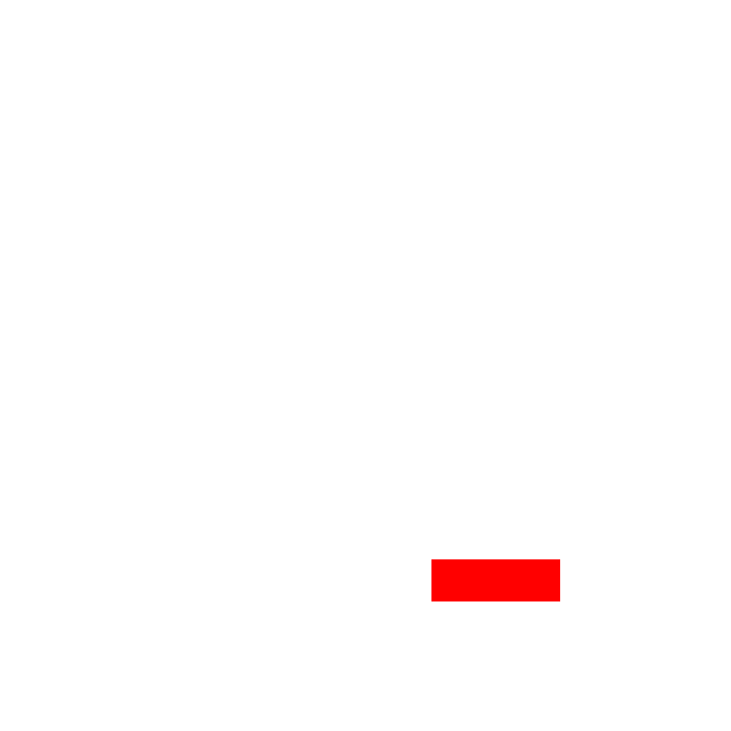
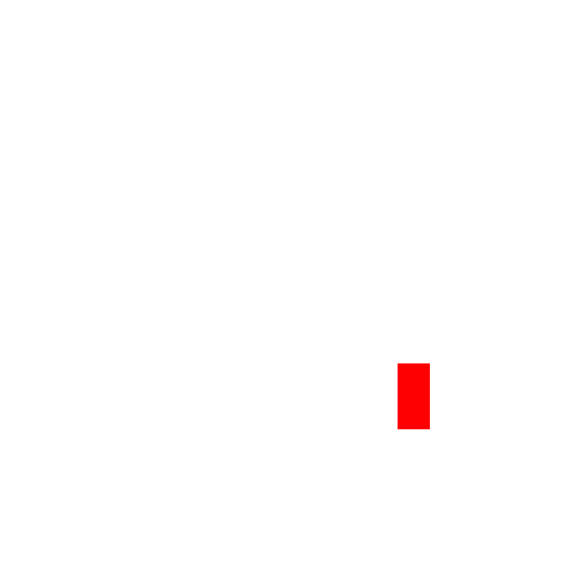
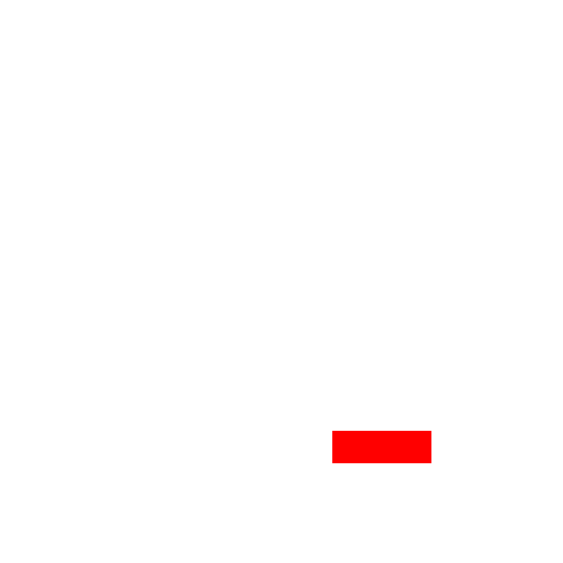

Locations


 
- cerulean-cave-1f
- cerulean-cave-2f

Weepinbell is a unique Pokémon resembling a carnivorous plant, using its strong jaws and acidic drool to dissolve and consume its prey. It hangs from tree branches while waiting for unsuspecting targets.
Kind of Pokémon: General
| Weaknesses | |||||
|---|---|---|---|---|---|
| 0x | 1/4x | 1/2x | 1x | 2x | 4x |
| grass | water, electric, fighting, fairy | poison, ground, bug, normal, rock, ghost, dragon, dark, steel | fire, ice, flying, psychic | ||
